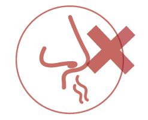
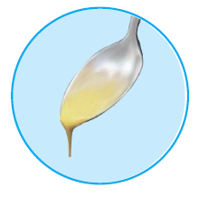
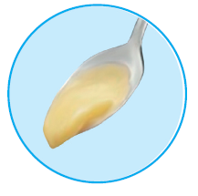
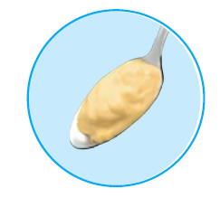

La disfagia es la dificultad para tragar líquidos, sólidos y/o saliva de manera segura y eficaz.
Es un síntoma, que puede aparecer entre otros casos, cuando se padece una enfermedad neurológica a causa de alteraciones de tipo motor, sensitivo o de reducción de la actividad refleja.
Síntomas a nivel físico • Riesgo de atragantamiento. • Pérdida de peso. • Falta de hidratación que puede conllevar agravamiento de las infecciones de orina. • Complicaciones respiratorias.
Síntomas a nivel psícológico • Fobia a comer. • Rechazo de ciertos alimentos. • Pérdida de apetito e interés hacia la comida.
Síntomas a nivel social • Cambios en las relaciones familiares y sociales y aislamiento.
fases de la deglución
La deglución se divide en tres fases:
1. fase oral
Es una fase voluntaria y se subdivide en dos subfases: preparatoria y de transporte. La fase preparatoria comienza cuando los alimentos se introducen en la boca. Una vez allí, se trituran y se concentran en una única masa denominada bolo alimenticio. En ese momento arranca la fase de transporte, en la que la lengua y el paladar empujan el bolo hacia el final de la boca (faringe). El velo del paladar, a su vez, se contrae y cierra el paso hacia las fosas nasales.
2. fase faríngea
Es una fase refleja. Comienza con el
reflejo de deglución y termina cuando
el bolo pasa por el esfínter esofágico
superior y penetra en el esófago. Éste
reflejo, provoca una serie de cambios
destinados a proteger los pulmones de
la entrada de alimentos y a favorecer la
entrada del bolo en el esófago. La laringe
asciende y se adelanta en el cuello,
“ocultándose” bajo el hueso hioides. Las
cuerdas vocales se cierran y la epiglotis
se eleva, produciéndose así el cierre del
esfínter glótico. Comienza la peristalsis
faríngea y se abre el esófago.
3. fase esofágica
Es una fase refleja. Comienza con el
reflejo de deglución y termina cuando
el bolo pasa por el esfínter esofágico
superior y penetra en el esófago. Éste
reflejo, provoca una serie de cambios
destinados a proteger los pulmones de
la entrada de alimentos y a favorecer la
entrada del bolo en el esófago. La laringe
asciende y se adelanta en el cuello,
“ocultándose” bajo el hueso hioides. Las
cuerdas vocales se cierran y la epiglotis
se eleva, produciéndose así el cierre del
esfínter glótico. Comienza la peristalsis
faríngea y se abre el esófago.
Pautas generales para una
deglución segura y eficaz
recomendaciones posturales para las personas sentadas
Comer y beber siempre en una postura correcta. Los pies deben estar apoyados y el tronco debe
mantenerse recto, con la espalda en contacto con el respaldo de la silla.
No tragar nunca con la cabeza inclinada hacia atrás ya que esto aumenta mucho el riesgo de que el
alimento pase a las vías respiratorias, produciéndose un atragantamiento. En general, en el momento de
tragar es recomendable flexionar ligeramente la cabeza hacia delante, con el fin de contribuir a estimular
el reflejo de la deglución. Por eso, es importante evitar el uso de porrones o beber directamente de una
botella. Hay que utilizar vasos de boca ancha o de forma arqueada para evitar el tope de la nariz, pero no se
recomienda el uso de “pajitas” o cañitas para sorber.
El mobiliario debe facilitar una buena postura. Hay que evitar comer en mesas demasiado bajas o
demasiado altas.
Si la persona afectada no es independiente para la alimentación, quien le ayude debe posicionarse de
manera que le facilite una buena postura: enfrente y a una altura por debajo del asiento de su silla para
evitar que trague con la cabeza girada hacia un lado. Imagen: Cuidador da de comer
Las personas con dificultad para mantener una postura correcta por temblor cefálico, dificultad para
sostener el tronco… pueden necesitar adaptaciones como cabezales, vasos especiales, etc.
recomendaciones posturales para personas en cama
Para comer o beber, incorpórela
de manera que la inclinación
de la cabecera de la cama esté
comprendida entre 60 y 80
grados. Procure, igualmente, que
la espalda esté completamente
recta con la cabeza ligeramente
inclinada mediante un cojín
colocado detrás.
Se puede poner, igualmente, un
cojín debajo de las rodillas.
recomendaciones ambientales
concentración:
A la hora de afrontar los problemas de deglución es imprescindible convertir en consciente un proceso
que antes era inconsciente. Por eso hay que evitar distraerse mientras se come y se bebe. Y para ello es
importante que las personas del entorno de la persona afectada favorezcan su concentración.
•La necesidad de concentración es especialmente importante en aquellas personas que presenten labilidad
emocional (llanto y/o risa incontrolados). Reírse, hablar o llorar mientras se traga aumenta muchísimo el
riesgo de atragantarse.
Adecuación del entorno y de los hábitos
•Procurar que la persona con dificultades para tragar no coma sola.
• Para aumentar la seguridad, escoger un sitio en la mesa que permita moverse fácil y rápidamente en caso
de problema.
• En los casos en que haya fatiga puede ser necesario descansar un poco antes de comer.
• Si la persona no es independiente para la comida y necesita que se la den:
• Comprobar que puede respirar correctamente por la nariz.
• Colocarse de manera que la persona no tenga que girar la cabeza.
• Evitar trozos demasiado grandes.
• Administrar la ración en pequeñas cantidades.
• Comprobar la respiración sea fluída después de cada deglución.
• Dedicarle el tiempo necesario a las comidas.
• No volver a llenar la boca hasta haberla vaciado del todo. Observar el movimiento de la laringe puede
ayudar a la persona cuidadora a comprobar que la boca está vacía (en los hombres es muy evidente por
la elevación de la nuez).
• No distraerle ni hacerle reír.
Déficit cognitivos y conductuales
Algunas personas con disfagia presentan a la vez dificultades
cognitivas (problemas de atención, concentración, memoria, etc.), que
pueden interferir en la incorporación de las pautas necesarias para una
buena deglución.
En estos casos puede ser necesario adaptar el entorno en el momento
de la comida para evitar que estos trastornos interfieran en la
deglución.
Algunas de las medidas útiles son:
• Apagar la televisión mientras la persona come
• Evitar gritos y ambientes ruidosos
• En el caso de impulsividad, recordarle constantemente la necesidad
de comer despacio. Puede ser útil acostumbrarle a dejar los cubiertos
en la mesa hasta no haber tragado
• En el caso de falta de iniciativa, motivarle a seguir comiendo
utilizando siempre las mismas palabras.
• Establecer unas rutinas fijas que le faciliten al afectado el control
de la situación: comer siempre a la misma hora y en el mismo sitio;
colocar los utensilios de la misma forma; darle las consignas siempre
con las mismas palabras, etc.
Higiene bucal
Se recomienda una buena higiene de la boca para evitar
atragantamientos inesperados. La mala higiene de los dientes y de la
boca aumenta la colonización bucal por gérmenes, incrementando la
posibilidad de infección respiratoria en caso de aspiraciones pulmonares.
Lavar los dientes y la boca después de las comidas. Es muy importante
inclinar la cabeza hacia delante al hacerlo. La higiene debe incluir limpieza
de dientes, encías, paladar y lengua. Y realizarla de atrás hacia la punta de
la lengua.
Es preciso fijar bien la dentadura postiza antes de las comidas. Controlar
las llagas o heridas de la boca que se pueden producir debido a las
dificultades en la movilidad de la musculatura oral (mordeduras de
lengua, mejillas o labios).
Si no se puede usar dentífrico porque la persona no puede enjuagarse,
utilizar una gasa impregnada de enjuague bucal y cambiarla con
frecuencia. Si se usa cepillo, puede utilizar agua y una cantidad muy
pequeña de dentífrico. El cepillo debe enjuagarse repetidamente con agua
durante la limpieza.
Maniobras facilitadoras de la deglución
Estrategias facilitadoras de la deglución
Respiración:

Para facilitar el tránsito del alimento por la vía digestiva y evitar su
paso a las vías respiratorias, hay que detener momentáneamente la
respiración al tragar. Este proceso, normalmente automático, puede
estar alterado en personas con disfagia. En estos casos es necesario
compensar la alteración mediante una parada consciente de la
respiración en el momento de tragar.
Técnicas de incremento sensorial
Estas técnicas aumentan la sensibilidad oral y activan el sistema
nervioso central poniéndolo alerta en el momento de comer:
• Beber un vaso de agua bien fría antes de las comidas puede, en
algunos casos, facilitar la deglución. Esto se explica por el efecto
estimulante de la sensibilidad que puede tener la aplicación de frío
(crioterapia).
• Dar toques con un bastoncillo mojado con limón por el interior de la
boca.
• Presionar la base de la lengua con una cucharilla recién sacada del
congelador.
Maniobras facilitadoras de la deglución
Deglución forzada:
favorece la propulsión del bolo y la contracción
faríngea, facilitando que no se acumulen residuos.
La deglución con esfuerzo se puede repetir más de una vez. Cuando
se hace repetidamente una o más veces, esta maniobra se denomina
maniobra de doble deglución con esfuerzo o deglución en seco, ya que
la primera deglución es para transportar el bolo hacia la faringe y el
esófago y las siguientes para aclarar los residuos acumulados en la
faringe.
Maniobra supraglótica:
consiste en el seguimiento de una serie
de pasos que optimizan el grado de seguridad de la deglución. Su
seguimiento estricto y sistemático puede, en muchos casos, evitar o
retrasar la necesidad de adaptación de la dieta.
Hay que tener en cuenta que es necesaria una buena capacidad de
concentración para utilizar esta maniobra eficazmente. Esta maniobra
debe estar indicada por un especialista.
Pautas para la adaptación de la dieta
Recomendaciones para problemas de deglución con líquidos
En cuanto a los líquidos, si la persona presenta una alteración en la seguridad de la deglución como tos
durante la deglución o después de ella, cambios en la calidad de la voz, disminución de la saturación de
oxígeno…, es preciso espesar los líquidos y reducir el volumen a administrar.
Para aumentar la viscosidad de los líquidos se puede utilizar un espesante comercial que debe ser recetado
por el personal médico y preferentemente de la modalidad “Clear” porque son de última generación y están
libres de almidones, mantienen unas texturas mucho más estables y son mucho más sencillos de manejar.
Para el uso de los espesantes, tanto la persona con disfagia como las que cuidan, deben ser instruidas en
unos sencillos parámetros para lograr la viscosidad pautada.
En el tratamiento de la disfagia se utilizan tres tipos de viscosidades: néctar, miel y pudding. El/la logopeda
o el/la profesional sanitario nos debe indicar cuál es la más adecuada para el manejo de nuestra disfagia.
En cuanto al volumen de líquido a administrar, debemos tener prudencia y seguir las indicaciones del/la
profesional en cuanto a la cantidad adecuada para minimizar el riesgo de aspiración. En general, debemos
administrar volúmenes pequeños, que faciliten un adecuado manejo.
Tipos de viscosidades
Estas son las características de las principales viscosidades para el tratamiento de la disfagia:
Viscosidad néctar:

• Puede beberse sorbiendo con pajita
• Puede beberse en taza
• Al decantar cae formando un hilo fino
Viscosidad miel:

• No puede beberse con pajita
• Se puede tomar en taza o con cuchara
• Al decantar cae formando gotas espesas
• Al cogerlo con cuchara no mantiene su forma
Viscosidad pudding:

• No puede beberse
• Sólo puede tomarse con cuchara
• Al decantar el líquido espesado, éste cae en bloque.
• Al cogerlo con una cuchara, sí mantiene su forma